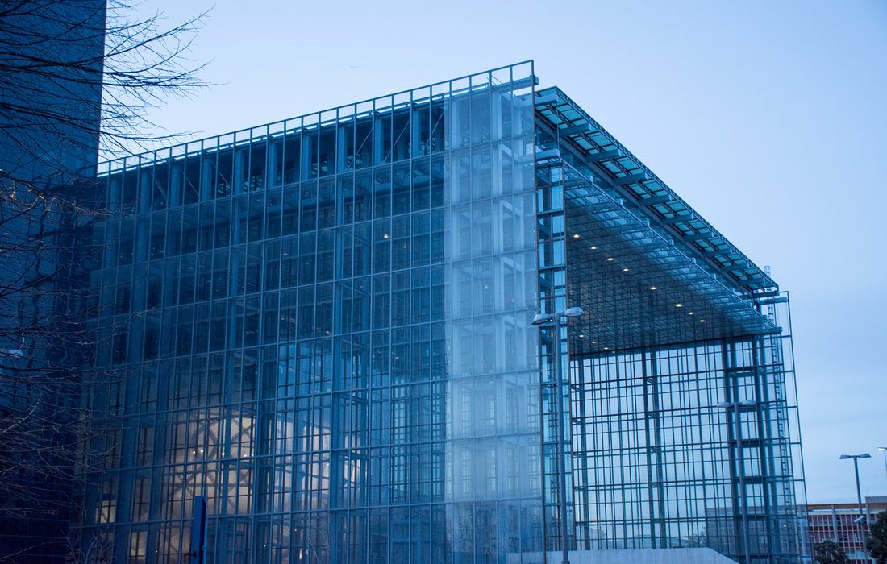
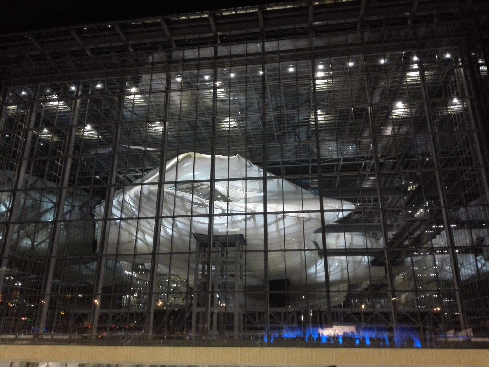

Venue · Convention centre
Roma Convention Center La Nuvola
- Type
- Convention centre
- Location
- Rome, Italy
- Address
- Viale della Pittura 50, 00144 Rome
- Capacity
- 8,000 capacity
- Exhibition space
- 26,000 m²
- Halls
- Auditorium 1,800 seats; Forum 7,300 m²; meeting halls 9,000 m² with about 30 rooms and a 5,000-seat plenary; official total almost 26,000 m² and 8,000 seats
- Official website
- https://www.eurspa.it/polo-congressuale/roma-convention-center-la-nuvola/
About
Rome's flagship convention centre in the EUR district. Official romaconventioncenter.it pages describe almost 26,000 m² of floor area and 8,000 seats, with a 1,800-seat auditorium, a 7,300 m² Forum, and 9,000 m² of meeting halls (about 30 rooms, plenary 5,000). The official organisers / group address is Viale della Pittura 50, 00144 Rome. Coordinates are the Nominatim pin for the named Roma Convention Center La Nuvola building (labelled at Viale Asia 40). Competitor marketplace listings were not used as a source.
Spaces
| Name | Type | Capacity | Area |
|---|---|---|---|
| Auditorium | — | 1,800 | — |
| Forum | — | — | 7,300 m² |
| Meeting halls (combined) | — | 5,000 theatre | 9,000 m² |
Sources
- Official source — https://www.eurspa.it/polo-congressuale/roma-convention-center-la-nuvola/
- Official source — https://www.romaconventioncenter.it/